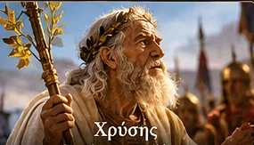
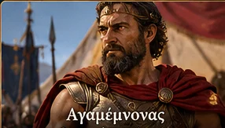
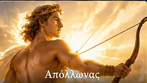
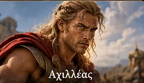
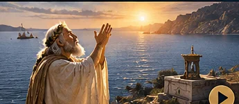
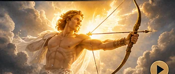

Η αρχή της οργής
Ο Χρύσης ζητά την κόρη του. Ο Αγαμέμνονας τον προσβάλλει. Ο Απόλλωνας τιμωρεί το στρατόπεδο των Αχαιών. Ανακάλυψε τα πρόσωπα, τα γεγονότα και τις έννοιες που χρειάζεσαι για το διαγώνισμα.
1. Γνώρισε τα πρόσωπα
Πάτησε το όνομα κάτω από κάθε εικόνα για να εμφανιστούν τα στοιχεία και μια ερώτηση.

Χρύσης · ιερέας του Απόλλωνα
Πατέρας της Χρυσηίδας. Φτάνει στο στρατόπεδο των Αχαιών με λύτρα και τα ιερά σύμβολα του Απόλλωνα. Ζητά να ελευθερώσουν την κόρη του. Όταν ο Αγαμέμνονας τον αποπέμπει, προσεύχεται στον θεό.
Σκέψου: Γιατί η προσβολή του Χρύση είναι και ασέβεια προς τον Απόλλωνα;

Αγαμέμνονας · αρχηγός των Αχαιών
Αρνείται να δεχτεί τα λύτρα και απειλεί τον Χρύση. Η συμπεριφορά του φανερώνει αλαζονεία, αυταρχισμό και ασέβεια.
Σκέψου: Ποια λόγια ή πράξεις του δικαιολογούν τον χαρακτηρισμό «υβριστικός»;

Απόλλωνας · θεός και προστάτης του Χρύση
Ακούει την προσευχή του ιερέα του και στέλνει θανατηφόρο λοιμό στους Αχαιούς. Στη συγκεκριμένη σκηνή στρέφεται εναντίον τους.
Σκέψου: Πώς παρουσιάζεται ο θεός με ανθρώπινα χαρακτηριστικά;

Αχιλλέας · Αχαιός ήρωας
Η οργή του αποτελεί το θέμα της Ιλιάδας, όπως δηλώνεται στο προοίμιο. Στους στίχους 1–53 η σύγκρουσή του με τον Αγαμέμνονα προαναγγέλλεται, δεν έχει ακόμη παρουσιαστεί ως γεγονός της αφήγησης.
Σκέψου: Γιατί ο ποιητής αρχίζει με τις συνέπειες της οργής;
Άλλοι σημαντικοί: Χρυσηίδα: κόρη του Χρύση, αιχμάλωτη των Αχαιών. Δίας: η βουλή του αναφέρεται στο προοίμιο. Τρώες: η αντίπαλη παράταξη του πολέμου, χωρίς ενεργό ρόλο στα γεγονότα των στ. 1–53.
2. Τα γεγονότα με τη σωστή σειρά
3. Το προοίμιο (στ. 1–7)
Επίκληση στη Μούσα: «Μῆνιν ἄειδε, θεά…». Ο ποιητής ζητά από τη θεά να τραγουδήσει την οργή.
Θέμα: η ολέθρια οργή του Αχιλλέα. Συνέπειες: πόνος, θάνατοι ηρώων, νεκρά σώματα βορά σε σκυλιά και όρνια. Χρονική αφετηρία: η φιλονικία Αχιλλέα και Αγαμέμνονα.
Προσοχή: ο ποιητής αναφέρεται ήδη στις συνέπειες και στη σύγκρουση, αλλά αυτές δεν έχουν ακόμη εκτυλιχθεί μέσα στην αφήγηση των στίχων 1–53. Το προοίμιο περιλαμβάνει επίκληση και σύντομη παρουσίαση του θέματος, όχι ξεχωριστή τυπική παράκληση.
Ερώτηση: Γιατί χαρακτηρίζεται «ολέθρια» η οργή;
Επειδή προξενεί αμέτρητες συμφορές και θανάτους στους Αχαιούς, όπως προαναγγέλλει το προοίμιο.
4. Η προσευχή του Χρύση (στ. 37–42)

Ο Χρύσης, αφού απομακρύνεται από το στρατόπεδο, απευθύνεται στον θεό του. Πάτησε κάθε μέρος για να δεις τη λειτουργία του.
Α. Επίκληση (στ. 37–39)
Προσφωνεί τον Απόλλωνα με τα προσωνύμια και τους τόπους λατρείας του, επιδιώκοντας να εξασφαλίσει την προσοχή του.
Β. Υπενθύμιση προσφορών (στ. 39–41)
Υπενθυμίζει στον θεό τις τιμές, τους ναούς και τις θυσίες που του έχει προσφέρει. Επικαλείται την αμοιβαιότητα στη σχέση τους.
Γ. Αίτημα (στ. 41–42)
Ζητά να πληρώσουν οι Αχαιοί με τα βέλη του Απόλλωνα για τα δάκρυά του.
Διάκριση: Η ικεσία γίνεται προς τους Αχαιούς για την επιστροφή της κόρης του. Η προσευχή γίνεται προς τον Απόλλωνα για τιμωρία. Στην ικεσία ο Χρύσης επικαλείται και το κύρος του θεού, κάτι που μπορεί να λειτουργεί ως έμμεση προειδοποίηση· η ρητή έκκληση για τιμωρία έρχεται αργότερα, στην προσευχή.
5. Ερμηνευτικές έννοιες
Άτη → Ύβρις → Νέμεσις → Τίσις
Άτη: τύφλωση του νου, λανθασμένη κρίση. Ύβρις: αλαζονική υπέρβαση των ορίων, όπως η προσβολή του ιερέα. Νέμεσις: θεϊκή αγανάκτηση. Τίσις: τιμωρία, εδώ ο λοιμός.
Το σχήμα βοηθά στην ερμηνεία, χωρίς να σημαίνει ότι κάθε στάδιο δηλώνεται ρητά στους στίχους.
Ομηρική τεχνική
Προοικονομία: προαναγγέλλονται η σύγκρουση και οι συνέπειες της οργής.
Ανθρωπομορφισμός: ο Απόλλωνας θυμώνει, κινείται, ακούει και ενεργεί σαν άνθρωπος.
Εικόνες: η κάθοδος του Απόλλωνα, ο ήχος των βελών και οι νεκρικές πυρές δημιουργούν έντονη οπτική και ακουστική ατμόσφαιρα.

6. Δες την ιστορία
Σύντομο βίντεο με υπότιτλους, χωρίς ηχογραφημένη αφήγηση. Πάτησε ▶ για αναπαραγωγή.
Εναλλακτική αφήγηση σε κείμενο
Ο Χρύσης ζητά από τους Αχαιούς να επιστρέψουν τη Χρυσηίδα. Ο Αγαμέμνονας τον προσβάλλει και τον διώχνει. Ο ιερέας προσεύχεται στον Απόλλωνα, ο οποίος τιμωρεί το στρατόπεδο με θανατηφόρο λοιμό. Το προοίμιο έχει ήδη προαναγγείλει την οργή του Αχιλλέα και τις καταστροφικές συνέπειές της.
7. Έλεγξε τις γνώσεις σου
Διάλεξε μία απάντηση. Η εφαρμογή θα σου δείξει αμέσως αν είναι σωστή.
8. Προετοιμασία για το διαγώνισμα
Απάντησε πρώτα γραπτά. Έπειτα άνοιξε την ενδεικτική απάντηση.
1. Ποιο είναι το θέμα του προοιμίου και ποιες συνέπειες αναφέρονται;
Η ολέθρια οργή του Αχιλλέα και οι συμφορές που προκαλεί στους Αχαιούς: πόνος, θάνατοι πολλών ηρώων και ατίμωση των νεκρών σωμάτων.
2. Πώς χαρακτηρίζεται ο Αγαμέμνονας; Τεκμηρίωσε.
Αλαζονικός, αυταρχικός και ασεβής: απορρίπτει το αίτημα του Χρύση, τον προσβάλλει και τον απειλεί, παρότι ο ιερέας εκπροσωπεί τον Απόλλωνα.
3. Ποια είναι τα τρία μέρη της προσευχής του Χρύση;
Επίκληση στον Απόλλωνα, υπενθύμιση των προσφορών και διατύπωση του αιτήματος για τιμωρία των Αχαιών.
4. Πώς συνδέονται η ύβρις και η τίσις με το επεισόδιο;
Η προσβολή του ιερέα αποτελεί υβριστική συμπεριφορά του Αγαμέμνονα. Η τιμωρία εκδηλώνεται με τον λοιμό που στέλνει ο Απόλλωνας στο στρατόπεδο.
5. Γιατί η παρουσίαση του Απόλλωνα είναι ανθρωπομορφική;
Ο θεός εμφανίζει ανθρώπινα συναισθήματα και συμπεριφορές: οργίζεται, ακούει την προσευχή, κατεβαίνει και χρησιμοποιεί το τόξο του.
Οι εικόνες είναι σύγχρονες καλλιτεχνικές αναπαραστάσεις. Οι σύντομες επεξηγήσεις και οι απαντήσεις αποτελούν διδακτική σύνθεση με βάση την ενότητα, όχι αυτούσια αποσπάσματα από το σχολικό βιβλίο.